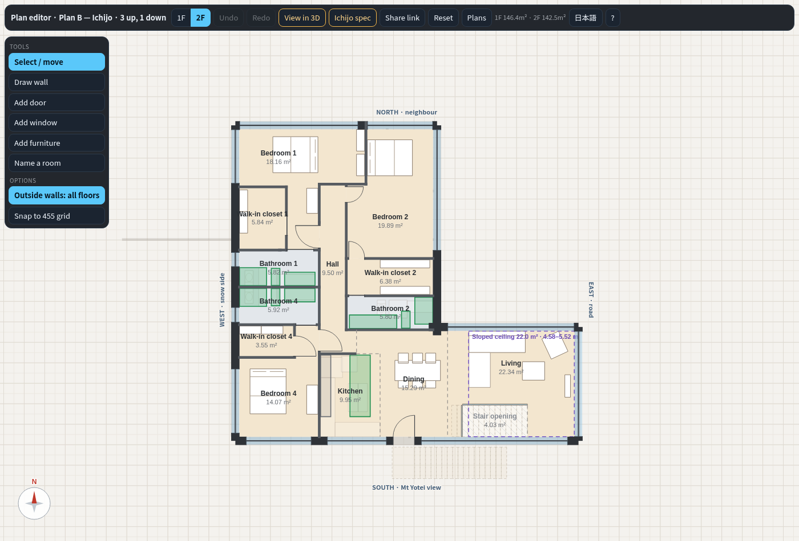

Plan a · Tsuchiya reference house (house 3)
What changed
- Only the windows changed: walls, rooms, doors and furniture are as Tsuchiya Kensetsu drew them.
- Floor-to-ceiling glass on the view side of the living, the veranda room and the loft; the loft window grows from 1.19 × 1.17 m to 3.80 × 2.5 m.
- Bedrooms 1 and 2: windows 1.19 × 0.97 m → 2.6 × 2.0 m; bedroom 1 also gets a 2.74 m view window above the bed.
- Living, dining and kitchen: one 4.73 m window instead of two 1.65 m ones, and a 3.06 m dining window.
- Unit-bath windows taller, with frosted glass (dotted on the plan).
Key numbers
- Floor area
- 1F 75.2 · 2F 66.1 · loft 18.5 m²
- Bath
- two unit baths, 3.3 m² each
- Gym
- none
- Glass
- all windows 79.4 m² (was 27.1)
- Roof, highest point
- ≈ 9.6 m above ground


Plan b · Tsuchiya revised (house 4)
What changed
- The boiler sits in a closet under the stairs, next to the WC; the plant room and the storage rooms are gone.
- No hall: one changing + rest room that the entrance, stair, gym, WC, laundry, boiler room and bath all open off.
- Bath 9.9 → 14.9 m²: two hinoki tubs facing the view glass, a walk-in shower and two wash stations; the sauna still opens into the bath.
- Den 2 is now a closed room with a door (7.3 m², single bed and desk); den 1 in the loft gets a single bed too.
- The walk-in closet became a bigger ensuite with a double washstand; the master bedroom gets a built-in closet.
- 28 windows (was 25): floor-to-ceiling view glass in the gym, dining, kitchen and loft; bathroom windows frosted.
Key numbers
- Floor area
- 1F 79.3 · 2F 75.2 · loft 24.8 m²
- Bath
- 14.9 m² (was 9.9) + sauna 5.0 m²
- Gym
- 43.0 m²
- Glass
- all windows 127.0 m² (was 53.8)
- Roof, highest point
- ≈ 9.9 m above ground


Plan c · Plan B compact (house 5)
What changed
- Turned the right way round: the entrance is on the north under a 6.0 × 5.5 m carport, and all the big glass faces south to Mt Yotei, with nothing built against it.
- One roof, high on the east (road) side and low on the west, so the snow slides off away from the door; the ground-floor west wall stays solid where it lands.
- Bath 12.4 → 22.8 m²: two hinoki tubs, a walk-in shower, three wash stations, the sauna opening into it; the lounge is folded into one changing + rest room.
- One laundry, on the 1F off the changing room; the boiler is in a closet under the stair; no plant room.
- Both dens are closed rooms with a door, single bed, desk and wardrobe; halls cut to 4 % of the 1F and 1.3 % of the 2F.
- New loft over the master suite: a 29.8 m² bedroom / den with its own storage and a south window.
Key numbers
- Floor area
- 1F 124.2 · 2F 121.8 · loft 38.1 m²
- Bath
- 22.8 m² (was 12.4)
- Gym
- 62.1 m²
- Glass on the view (south) side
- 72.1 m²: 1F 30.5 · 2F 34.1 · loft 7.5
- Roof, highest point
- 10.2 m above ground (limit 12 m)


Plan d · Plan C (L-shaped) (house 6)
What changed
- One laundry (1F, off the changing + rest room) instead of two; the 2F laundry and storage corner is now bedroom 3 (12.4 m²) with floor-to-roof view glass.
- Lounge and changing room merged into one changing + rest room; the bath grows 13.3 → 24.8 m² in the private north-west corner (two hinoki tubs, walk-in shower, the sauna opening into it).
- The plant room and the storage room are gone; the boiler is in a closet under the stair.
- No corridor: the genkan steps up into a compact hall at the stair foot, with doors to the changing + rest room, WC, boiler room and gym.
- Gym 45.6 → 67.9 m²; a 3.0 m² ski / gear room beside the genkan.
- Den 1 is now closed (door from the dining); both dens have a single bed, desk and wardrobe.
Key numbers
- Floor area
- 1F 129.2 · 2F 126.7 m²
- Bath
- 24.8 m² (was 13.3)
- Gym
- 67.9 m² (was 45.6)
- Glass on the view (south) side
- 72.5 m², 84 % of that facade
- Roof, highest point
- ≈ 9.9 m above ground


Plan e · Plan B — Ichijo (house 7)
What changed
- No wasted circulation: genkan + corridor + hall 16.8 → 8.8 m²; the corridor is gone.
- The front door is on the wing's north (carport) face by the inner corner; a 2.4 m² genkan steps up into a hall with a door to every room.
- The stair is reversed on the same strip, climbing east from the inner corner; the boiler room is the closet under its high end.
- One changing + rest room (13.0 m²) with the one laundry off it; the 32.1 m² bath and the sauna are unchanged.
- The gym is two rooms, each with its own door from the hall (75.9 m² in all).
- Upstairs only the stair opening moved (0.48 m east); every Ichijo fitting still fits.
Key numbers
- Floor area
- 1F 146.4 · 2F 142.5 m²
- Bath
- 32.1 m² + sauna 5.5 m²
- Gym
- 75.9 m² (two rooms)
- Glass on the view (south) side
- 53.9 m², 73 % of the south walls
- Roof, highest point
- 9.55 m above ground (2 sun pitch, limit 12 m)


Plan f · Plan B — Ichijo · compact (house 8) NEW
What changed
- The main block is 2.73 m shorter: about 16 % less floor than Plan B — Ichijo.
- Same no-corridor entrance, hall and reversed stair as Plan B — Ichijo (circulation 8.8 m²; first draft 21.3).
- Bedroom 3 (10.9 m²) at the end of the 1F hall, with its own shower room; the shower room and the sauna sit under 2F bedroom 2.
- Bath 31.9 m² (first draft 20.1): two hinoki tubs, a walk-in shower and a garden door; the sauna opens into it.
- A 7.5 m² changing room with the one laundry off it; the gym is two rooms (44.1 m²).
Key numbers
- Floor area
- 1F 122.9 · 2F 119.1 m²
- Bath
- 31.9 m² + sauna 5.4 m²
- Gym
- 44.1 m² (two rooms)
- Glass on the view (south) side
- 53.9 m², 73 % of the south walls
- Roof, highest point
- 9.55 m above ground (2 sun pitch)


Plan g · Plan B — Ichijo · 3 up, 1 down (house 9) NEW
What changed
- Bedroom 3 is now the wing east of the hall: 18.4 m² with glass to the north, east and south (view), door from the hall.
- Its shower room is across the 1 m hall; neither crosses the gym or the changing room.
- Same no-corridor entrance and reversed stair as Plan B — Ichijo (circulation 8.8 m²; first draft 19.9).
- The gym keeps the main block (52.1 m²; first draft 43.8); bath, changing + rest room and laundry as in Plan B — Ichijo.
- Upstairs: bedrooms 1, 2 and 4 of 18.2, 19.9 and 14.1 m², each with a walk-in closet and a unit-shower bathroom.
Key numbers
- Floor area
- 1F 146.4 · 2F 142.5 m²
- Bath
- 32.1 m² + sauna 5.5 m²
- Gym
- 52.1 m²
- Glass on the view (south) side
- 53.9 m², 73 % of the south walls
- Roof, highest point
- 9.55 m above ground (2 sun pitch)


